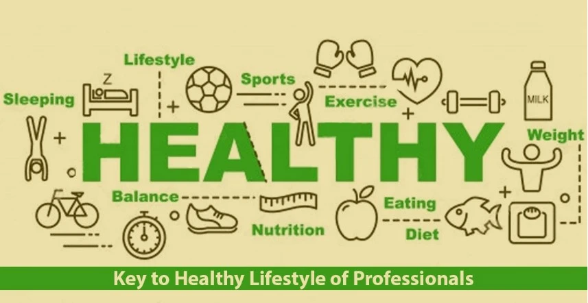

Welcome to Healthy Living Tips
Aimee is a working lady in her early forties living in a metropolitan city. Of late she feels exhausted when she reaches home in the evening. Her earlier schedule of exploring the world or spending time in recreational activities over the weekend looks far from an attainable wish nowadays. Out of frustration and agony, she reaches out to Monty, her long-time friend and a health advisor, for his advice. Monty suggests her to calm down and acknowledges that it is a problem like with many others, but the good news being there is a solution. The solution is to understand the lifestyle changes needed. Monty explains these changes in the following six categories.